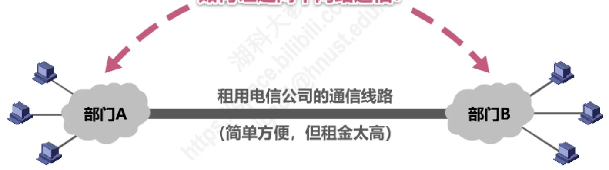
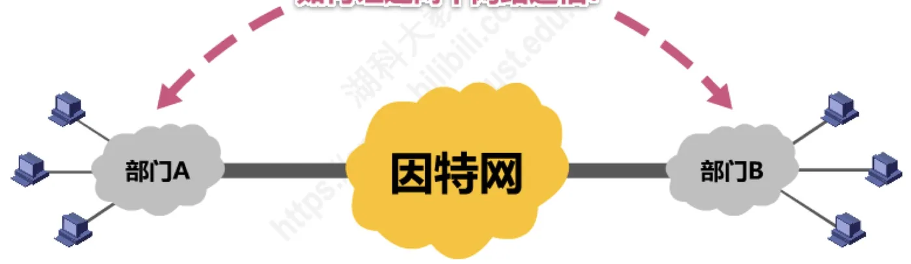
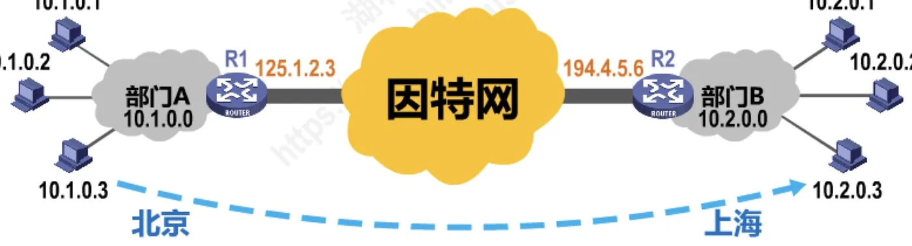
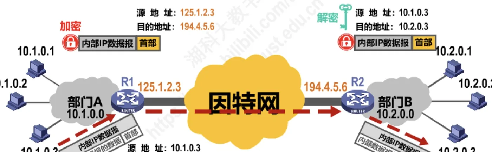
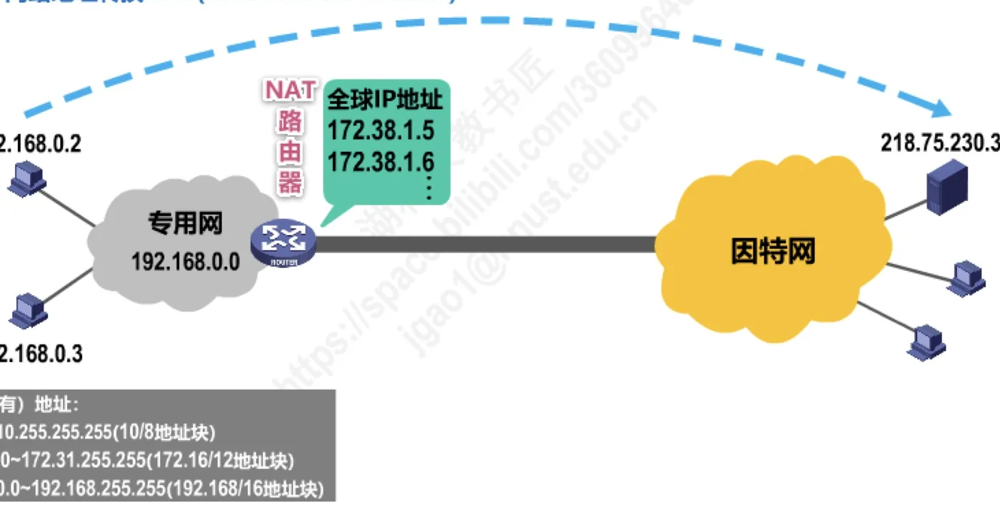
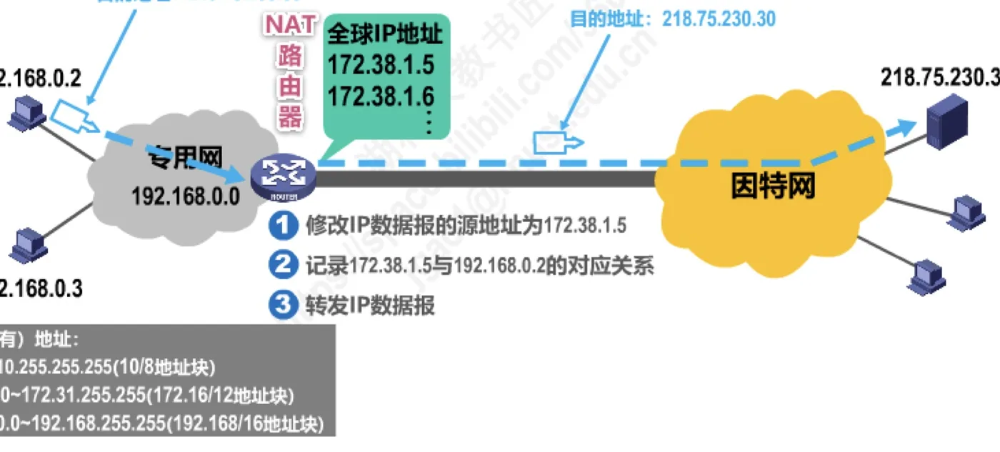
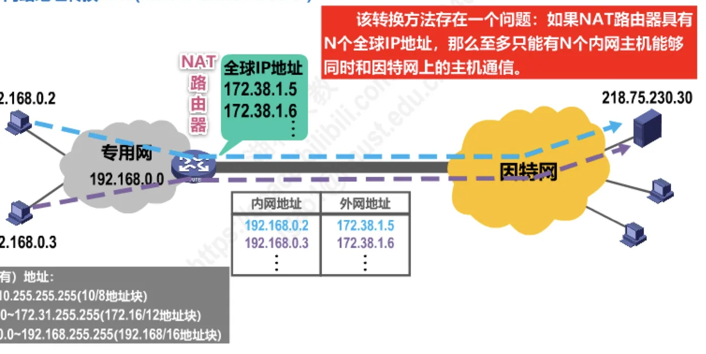
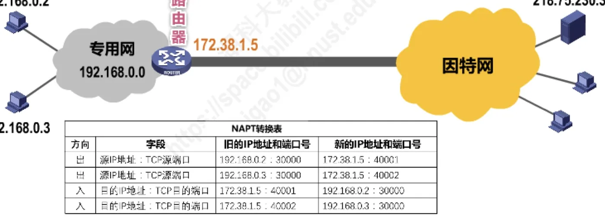
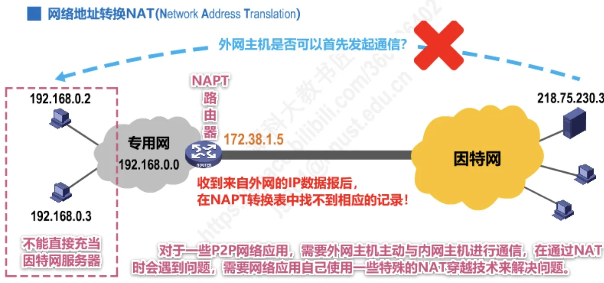
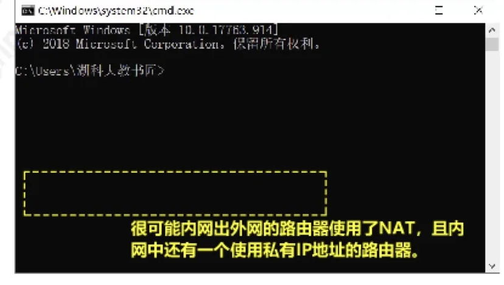

计算机通信与网络 · 第 4 章 网络层
4.9 虚拟专用网VPN与网络地址转换NAT
IPv4 地址空间即将耗尽，是第 4 章一条贯穿始终的暗线。本节讲在地址紧缺背景下出现的两种技术：让机构内部各个专用网借助公用因特网互连的虚拟专用网 VPN，以及让大量使用专用地址的主机共享少量全球地址访问因特网的网络地址转换 NAT。我们先把「专用（私有）地址」这套内部可用、公网不可路由的地址看清楚，再看 VPN 怎样用加密隧道把两个专用网连起来，最后看 NAT 与 NAPT 怎样改写 IP 地址和端口号，以及它们带来的两个后果。
1. 虚拟专用网 VPN
（1）从「租专线」到「借道因特网」
先看一个具体的场景。一个机构在北京和上海各有一个部门：北京的部门 A 和上海的部门 B 都有自己的内部网络，现在要让这两个网络里的主机互相通信。最直接的办法是租用电信公司的通信线路把两个网络连起来——简单方便，但租金太高（图 1）。

更经济的思路是：利用公用的因特网作为本机构各专用网之间的通信载体，这样的专用网就称为虚拟专用网 VPN（Virtual Private Network）（图 2）。说它「虚拟」，是因为两个部门之间并没有真的拉一条专线，而是借用了人人可用的因特网；说它「专用」，是因为这条通道只对本机构（以及被机构允许的合作伙伴）的主机开放。

（2）专用（私有）地址：VPN 中的主机分配什么地址
接下来必须回答一个问题：虚拟专用网中的各主机应该分配怎样的 IP 地址？由于 IPv4 地址的紧缺，一个机构能够申请到的 IPv4 地址数量往往远小于本机构所拥有的主机数量。因此，虚拟专用网中的各主机所分配的地址，应该是本机构可自由分配的专用地址，而不是需要申请的、在因特网上使用的公有地址。
专用地址又称私有地址，就是下面这三段（表 1）。它们在因特网上不可路由，因此可以反复地、互不干扰地在无数个机构内部使用。
| 地址块 | 地址范围 |
|---|---|
| 10/8 | 10.0.0.0 ~ 10.255.255.255 |
| 172.16/12 | 172.16.0.0 ~ 172.31.255.255 |
| 192.168/16 | 192.168.0.0 ~ 192.168.255.255 |
这三段只是因特网号码分配管理局 IANA 特殊用途地址登记表中的一项，登记表里还登记了环回地址、链路本地地址、文档举例地址等其他用途的地址块，本课程需要记住的是上面这三段。要留意的代价是：使用专用地址的主机不能直接和因特网上的主机通信，如果它要访问因特网，就必须借助本节后半部分讲的 NAT。这就把 VPN 和 NAT 两个话题联系起来了。
（3）一个例子：两个部门各用一段专用地址
用图 3 把上面的想法画出来。北京部门 A 的内部网络是 10.1.0.0/24，其中主机的地址为 10.1.0.1、10.1.0.2、10.1.0.3；上海部门 B 的内部网络是 10.2.0.0/24，其中主机的地址为 10.2.0.1、10.2.0.2、10.2.0.3。两个部门各有一台路由器 R1、R2 接入因特网，它们在因特网一侧的全球地址分别是 125.1.2.3 和 194.4.5.6。

请注意这两段专用地址在因特网上是不可路由的：因特网上的路由器根本不知道 10.1.0.0 和 10.2.0.0 在哪里，也不知道 10.1.0.3 指的是哪台主机。所以两个部门的专用网只能靠 R1 和 R2 之间的配合打通，这正是下面要讲的隧道技术要做的事。
（4）IP 隧道技术：把内部数据报加密后穿过因特网
假设部门 A 中地址为 10.1.0.3 的主机要向部门 B 中地址为 10.2.0.3 的主机发送数据。它构造出来的 IP 数据报，源地址是 10.1.0.3，目的地址是 10.2.0.3，我们称之为内部 IP 数据报。这样的数据报直接交给因特网是送不到的，于是 R1 把它整个加密，再当作数据部分封装上一层新的 IP 首部，构成在因特网上传输的外部 IP 数据报：源地址是 R1 的全球地址 125.1.2.3，目的地址是 R2 的全球地址 194.4.5.6（图 4）。

外部数据报在因特网上转发时，沿途的路由器只能看到 125.1.2.3 和 194.4.5.6，看不到里面装的原始地址和原始数据，这就是加密的意义所在。R2 收到外部数据报后，剥去外面的首部并解密，还原出源地址为 10.1.0.3、目的地址为 10.2.0.3 的内部 IP 数据报，再按目的地址把它交给部门 B 中的主机。这种把原始数据报整个当作数据部分、再封装一层的方式，叫作 IP 隧道技术。
由此可以看出 VPN 中的通信与普通因特网通信的不同：普通通信只有一个 IP 数据报首部，VPN 里则「首部套首部」——外面那层负责在因特网上寻址，里面那层才是真正的源地址和目的地址。关于 IP 数据报首部各字段的含义，可以回看 4.7 节。
（5）内联网 VPN、外联网 VPN 与远程接入 VPN
按照参与通信的双方是谁，VPN 可以分为三类：
- 内联网 VPN：同一机构内不同部门的内部网络所构成的虚拟专用网，图 3 的例子就属于这一类；
- 外联网 VPN：有时一个机构的 VPN 需要有某些外部机构（通常就是合作伙伴）参加进来，这样的 VPN 就称为外联网 VPN；
- 远程接入 VPN：在外地工作的员工需要访问公司内部的专用网络时，只要在任何地点接入到因特网，运行驻留在员工 PC 中的 VPN 软件，在员工的 PC 和公司的主机之间建立 VPN 隧道，即可访问专用网络中的资源。
三类 VPN 有一个共同点：VPN 要保证传输数据的安全性，会把原始的内部数据报进行加密，然后再把它封装成为在因特网上发送的外部数据报。
2. 网络地址转换 NAT
（1）为什么又提出 NAT
虽然因特网采用了无分类编址方式来减缓 IPv4 地址空间耗尽的速度（无分类编址见 4.3.4 节），但由于因特网用户数目激增，特别是大量小型办公室网络和家庭网络接入因特网的需求不断增加，IPv4 地址空间即将面临耗尽的危险仍然没有被解除。1994 年提出了一种网络地址转换 NAT（Network Address Translation）的方法，再次缓解了 IPv4 地址空间即将耗尽的问题。它的作用可以概括成一句话：NAT 能使大量使用内部专用地址的专用网络用户共享少量外部全球地址来访问因特网上的主机和资源。
（2）基本 NAT 的工作过程
先看最简单的场合（图 5）。专用网是 192.168.0.0，里面有两台主机 192.168.0.2 和 192.168.0.3；专用网通过一台 NAT 路由器接入因特网，这台路由器上配有全球 IP 地址，图中给出的是 172.38.1.5 和 172.38.1.6；因特网上另有一台主机 218.75.230.30。由于专用地址不能在因特网上路由，进出专用网的数据报都必须经过 NAT 路由器做地址转换。

设 192.168.0.2 要访问因特网上的 218.75.230.30。NAT 路由器对往外发送的 IP 数据报做三件事（图 6）：
① 把 IP 数据报的源地址 192.168.0.2 修改为分配给它的全球地址 172.38.1.5；② 记录 172.38.1.5 与 192.168.0.2 的对应关系；③ 转发这个 IP 数据报。于是因特网上的主机 218.75.230.30 收到数据报时，看到的是源地址 172.38.1.5、目的地址 218.75.230.30。

回程的数据报同样要经过转换。218.75.230.30 发出的数据报，源地址是 218.75.230.30、目的地址是 172.38.1.5；NAT 路由器收到后，按照刚才记录的对应关系把目的地址 172.38.1.5 改回 192.168.0.2，再交给专用网中的主机。NAT 路由器上保存的就是「内网地址 192.168.0.2 ↔ 外网地址 172.38.1.5」这样的对应关系，通信双方各自使用自己以为的地址，中间的转换对它们都是透明的。
（3）基本 NAT 的局限：全球地址有多少，能上网的主机就有多少
这种只转换 IP 地址的方法存在一个问题：如果 NAT 路由器具有 N 个全球 IP 地址，那么至多只能有 N 个内网主机能够同时和因特网上的主机通信（图 7）。图中的对应关系是 192.168.0.2 对应 172.38.1.5、192.168.0.3 对应 172.38.1.6，两台主机就把两个全球地址占满了，第三台主机想通信就没有地址可用。而一个机构里同时上网的主机往往成百上千，靠给每台主机配一个全球地址来解决显然不现实。

（4）网络地址与端口号转换 NAPT
出路在于把运输层的端口号也用起来。由于绝大多数的网络应用都是使用运输层协议 TCP 或 UDP 来传送数据（端口号、复用与分用的概念见 5.2 节），因此可以利用运输层端口号和 IP 地址一起进行转换。这样，用一个全球 IP 地址就可以使多个拥有本地地址的主机同时和因特网上的主机进行通信。这种将端口号和 IP 地址一起进行转换的技术，叫作网络地址与端口号转换 NAPT（Network Address and Port Translation）。

图 8 中的 NAPT 转换表说明了它是怎么区分内网主机的（表 2）：起作用的不仅是 IP 地址，还有端口号。
| 字段 | 旧 IP 地址和端口号 | 新的 IP 地址和端口号 |
|---|---|---|
| 源 IP 地址：TCP 源端口 | 192.168.0.2:30000 | 172.38.1.5:40001 |
| 源 IP 地址：TCP 源端口 | 192.168.0.3:30000 | 172.38.1.5:40002 |
| 目的 IP 地址：TCP 目的端口 | 172.38.1.5:40001 | 192.168.0.2:30000 |
| 目的 IP 地址：TCP 目的端口 | 172.38.1.5:40002 | 192.168.0.3:30000 |
表中前两行是出方向。192.168.0.2:30000 和 192.168.0.3:30000 这两条连接，本来用的源端口号都是 30000，经过 NAPT 路由器后被分别改写成全球地址 172.38.1.5 上的 40001 和 40002——正是靠端口号不同，一台路由器的一个全球 IP 地址才能同时代表多台内网主机。后两行是入方向。外网主机发来的数据报，目的地址和目的端口是 172.38.1.5:40001（或 40002），NAPT 路由器查表后改回 192.168.0.2:30000（或 192.168.0.3:30000），再交给对应的内网主机。这样一来，就不必再给每台内网主机单独配一个全球地址了。
（5）NAT 带来的两个后果
第一，外网主机不能首先发起通信。站在 NAPT 路由器上看很容易明白：外网主机发来的 IP 数据报，目的地是 172.38.1.5 上的某个端口，如果此前没有内网主机主动访问过它，NAPT 转换表里就找不到相应的记录，路由器不知道该把数据报交给哪台内网主机，只能丢弃（图 9）。所以使用 NAT 的专用网内主机不能直接充当因特网服务器。对于一些 P2P 网络应用，需要外网主机主动与内网主机进行通信，在通过 NAT 时会遇到问题，需要网络应用自己使用一些特殊的 NAT 穿越技术来解决问题。

第二，NAT 对外网屏蔽了内网主机的网络地址，能为内网主机提供一定的安全保护。外网主机只知道 172.38.1.5，并不知道内网里究竟有多少台主机、地址是怎么分配的，这在客观上形成了一道屏障。不过在实际网络中做路径实测时，仍然可以从返回结果里看出内网的痕迹：如果路径中出现了私有地址，很可能内网出外网的路由器使用了 NAT，且内网中还有一台使用私有 IP 地址的路由器（图 10）。

本节小结
- IPv4 地址紧缺是本节所有技术的出发点：一个机构能申请到的 IPv4 地址往往远少于自己的主机数，因此内部主机使用本机构可自由分配的专用（私有）地址，即 10/8（10.0.0.0 ~ 10.255.255.255）、172.16/12（172.16.0.0 ~ 172.31.255.255）、192.168/16（192.168.0.0 ~ 192.168.255.255）三段；它们能在机构内部反复使用，但在因特网上不可路由。
- 虚拟专用网 VPN 的做法是利用公用因特网作为本机构各专用网之间的通信载体，省掉昂贵的专线租金；关键技术是 IP 隧道技术——把原始的内部 IP 数据报加密后整个当作数据部分，再封装成源、目的地址为两端路由器全球地址的外部 IP 数据报，对端解密后还原出内部数据报。
- VPN 按参与者分三类：同一机构不同部门之间的是内联网 VPN，有合作伙伴等外部机构参加的是外联网 VPN，员工在外地通过 PC 上的 VPN 软件建立隧道访问公司资源的是远程接入 VPN。
- NAT 于 1994 年提出，让大量使用内部专用地址的用户共享少量外部全球地址访问因特网。基本 NAT 只转换 IP 地址：出方向把源地址改写为全球地址并记录对应关系，入方向按对应关系把目的地址改回内网地址；它的局限是 N 个全球地址最多只支持 N 台内网主机同时通信。
- NAPT 把运输层端口号与 IP 地址一起转换，于是一个全球 IP 地址就能支持多台内网主机同时通信（如 192.168.0.2:30000 与 192.168.0.3:30000 分别换成 172.38.1.5:40001 与 172.38.1.5:40002）。代价是外网主机不能首先发起通信，内网主机不能直接充当因特网服务器，P2P 应用需要使用 NAT 穿越技术；好处是 NAT 屏蔽了内网地址，为内网主机提供了一定的安全保护。
- 本节把「IPv4 地址不够用」这条线索收束起来：专用地址的编址细节见 4.3 节，NAT 与 NAPT 中登场的端口号将在下一章运输层展开（见 5.2 节）。